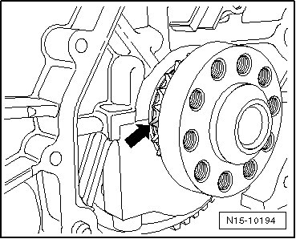
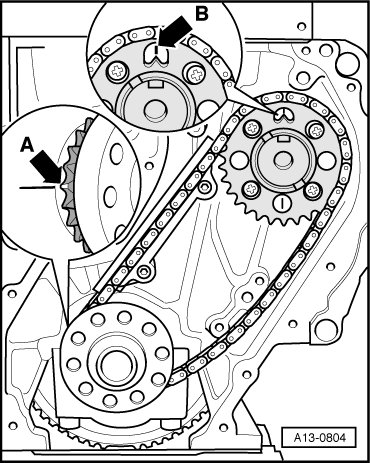
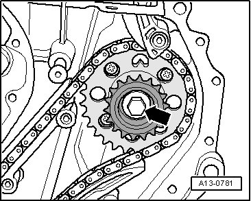
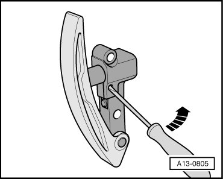
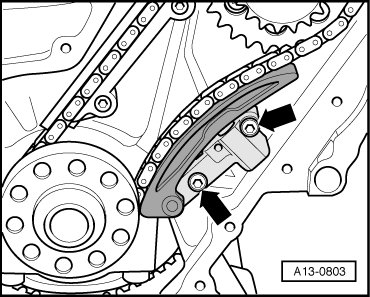
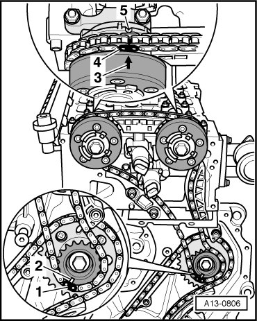
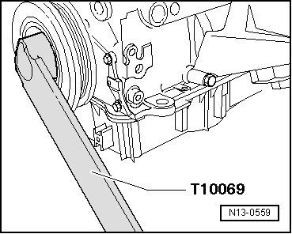
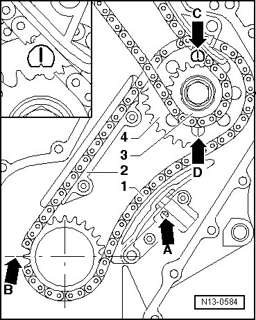
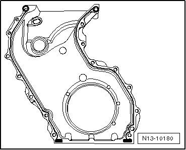
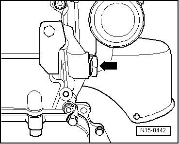

Intermediate Driveshaft and Camshaft Drive Timing Chains, Installing
Intermediate Driveshaft and Camshaft Drive Timing Chains, Installing
Special tools, testers and auxiliary items required
• Camshaft bar (T10068 A)
• Counter-holder tool (T10069)
• Torque wrench (5 to 50 Nm) (V.A.G 1331)
• Torque wrench (40 to 200 Nm) (V.A.G 1332)
• Sealant (D 176 501 A1)
Procedure
CAUTION!
When doing any repair work, especially in the engine compartment, pay attention to the following due to clearance issues:
• Route lines of all types (e.g. for fuel, hydraulic, EVAP canister system, coolant and refrigerant, brake fluid, vacuum) and electrical wiring so that the original path is followed.
• To prevent damage to the lines, make sure there is sufficient clearance to all moving or hot components.
• The following procedure is only possible with engine removed and is only described that way. The adjustments required depend on how far the engine has been disassembled. Oil pan is removed and must only be installed after assembling sealing flange.
Install the Timing Chain and the Chain Tensioner with Tensioning Plate for Intermediate Shaft Drive
- First set crankshaft to TDC cylinder 1. To do so, milled tooth of drive pinion- arrow - must align with bearing separating gap.

- Install both bolts without collar for glide track and tighten to 10 Nm. Place the glide track on the bolts.
- Turn the intermediate shaft so that the flattened side faces up.
- Install the timing change into the glide track and mount it on to the crankshaft.
- Install the large chain sprocket in the timing chain so that the tab on the chain sprocket aligns with the marking on the cylinder block- arrow B -.

- Mount the chain sprocket on to the intermediate shaft.
During installation make sure that the timing chain runs completely straight in the guide rail from the crankshaft to the intermediate shaft.
• Milled drive chain sprocket tooth must align with bearing joint - arrow A -.
• The tab on the intermediate shaft timing chain sprocket must align with the marking - arrow B - behind it.
- If large chain sprocket cannot be installed, rotate intermediate shaft slightly.
• Note the direction of rotation on the used timing chain.
- Mount a small chain sprocket on the intermediate shaft. Installation is possible on one position only.

- Tight the bolt - arrow - hand-tight because the small chain sprocket must be removed one more time.
- Now mount the chain tensioner.
- Release locking splines of chain tensioner - A - with a small screwdriver and tensioning rail pressed against chain tensioner.

- Install the chain tensioner in this position and tighten to 8 Nm - arrow -

Install the Camshaft Drive Timing Chain
Conditions
• The camshaft adjusters are installed
• Cams - A - of cylinder 1 must face each other
• The crankshaft is at TDC

- Insert the camshaft bar (T10068 A) into both shaft grooves.

- Remove the small intermediate shaft chain sprocket. The large chain sprocket may not be removed.
- Route chain between tensioning rail and guide rail toward control housing.
- Position the timing chain on the camshaft adjuster so the two individual copper colored chain links - 4 - align with the markings on the camshaft adjuster - 3 - and on the control housing - 5 -. Markings on control housing --> [ Markings on Control Housing with MPI Engines ] Valve Timing, Checking

- Install the small intermediate shaft chain sprocket into the timing chain. The marking - 2 - must align with the center copper colored chain link - 1 -.
- Install the small chain sprocket together with the timing chain on to intermediate shaft. Installation is possible in one position only.
- Lock vibration damper using counter-holder tool (T10069).

- Tighten the new intermediate shaft chain sprocket bolt - arrow - to 60 Nm + 90° (1/4 turn). (The additional turn may be performed in several steps.)
- Check the position of the camshaft to the intermediate shaft one more time.
• Milled drive chain sprocket tooth must align with bearing joint - arrow B -.
• The tab on the intermediate shaft timing chain sprocket must align with the marking - arrow C - behind it.

- Check the position of the copper color chain links to the adjustment markings.
• After rotating the crank shaft, the copper color chain links no longer align with the adjustment markings.
- Apply sealant (D 176 501 A1) on to clean sealing surfaces of sealing flange as shown.

• Note alignment pins in cylinder block.
- Install sealing flange immediately.
- To do this, insert all the mounting bolts by hand and tighten them to 10 Nm.
- Now install sealing ring for crankshaft in sealing flange --> [ Oil Seal, Flywheel Side ] Service and Repair.
- Now install oil pan --> [ Oil Pan ] Service and Repair.
If sealing rings in cover piece are to be replaced:
- Clean sealing surface on cover piece as well as on cylinder head.
- Lubricate oil channel seal O-ring - 1 - and insert in cover.

- Make sure the fitting sleeves - 2 - and - 3 - are inserted.
- Insert the sealing ring - 4 - in the cover.
- Clean old sealing compound from the 3 mm holes in the cylinder head gasket - arrows -

- Fill the 3 mm holes in the cylinder head gasket with sealant (D 176 501 A1). Coat the sealing surfaces on the cover with sealant (D 176 501 A1) and install the cover immediately.
- First install all cover bolts - arrows - and tighten until snug.

- Then tighten bolts M8 to 23 Nm, and tighten bolts M6 to 8 Nm.
- Install the camshaft roller chain tensioner - arrow - and tighten to 40 Nm.

- Turn over crankshaft twice in direction of engine rotation and check valve timing again--> [ Valve Timing, Checking ] Valve Timing, Checking.
• After rotating the crank shaft, the copper color chain links no longer align with the adjustment markings.
- Install cylinder head cover and intake manifold --> [ Cylinder Head Cover ] Cylinder Head Cover.